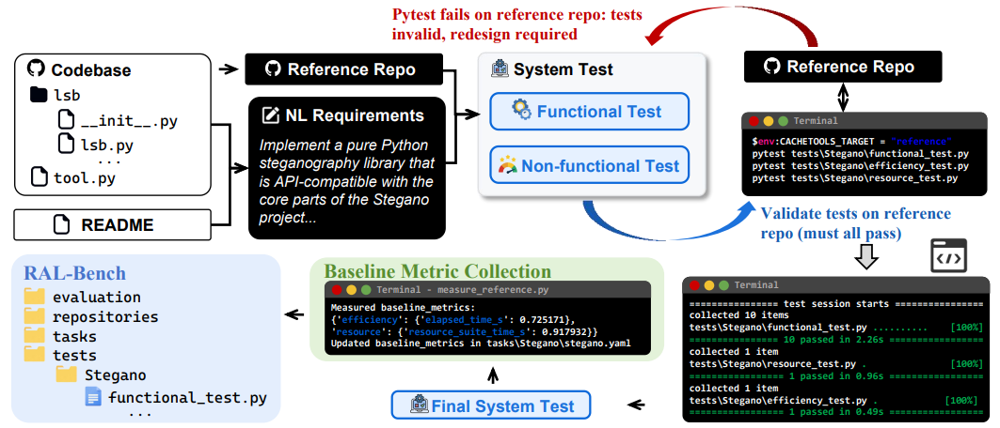
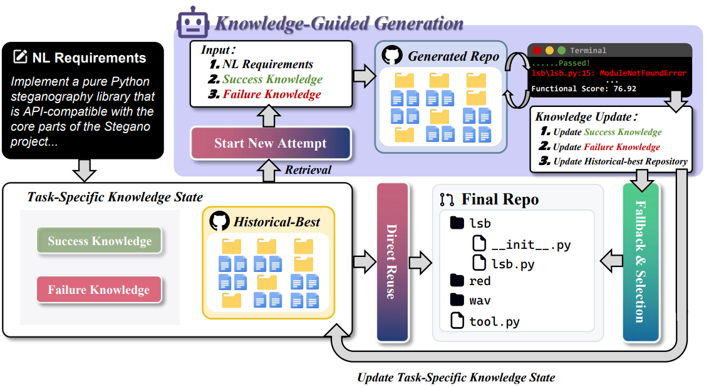
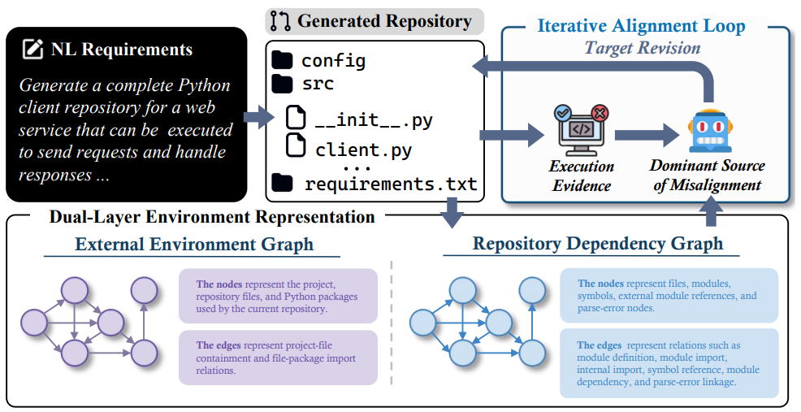
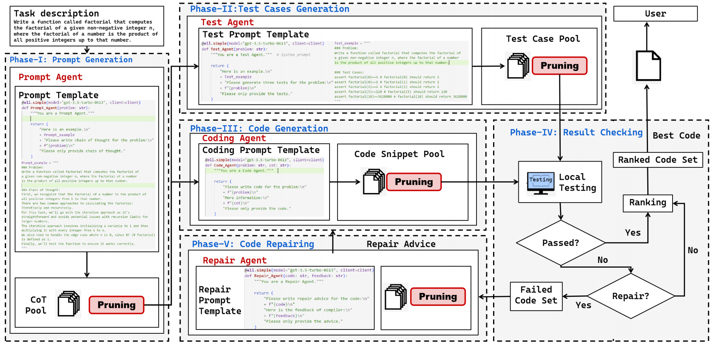
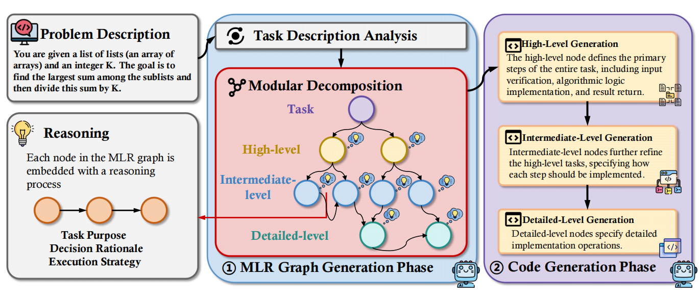
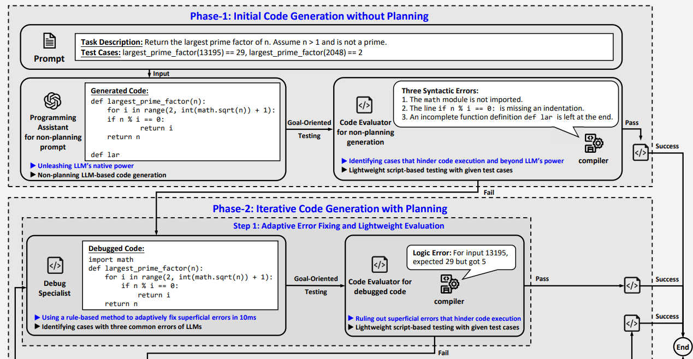
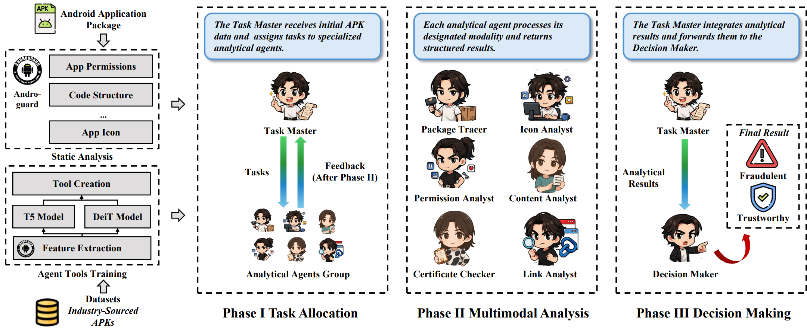
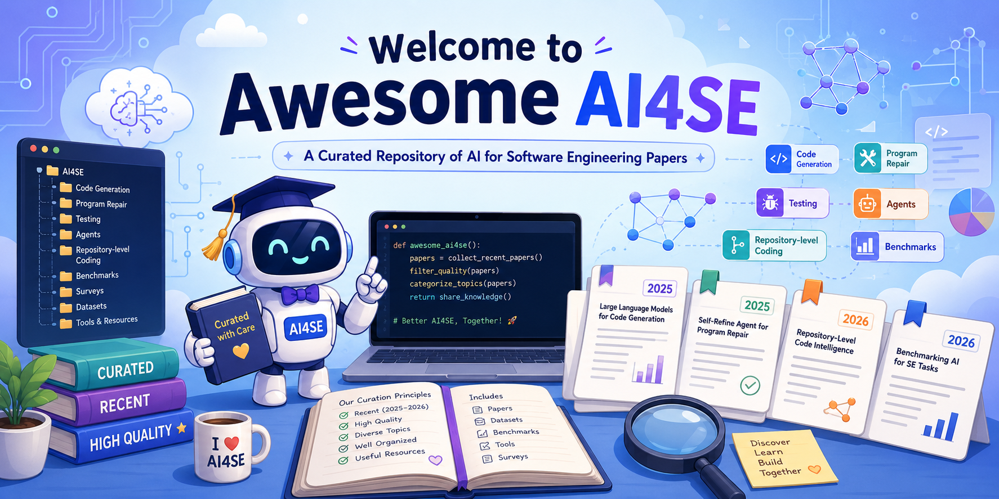

About Me
I am an incoming Ph.D. student at Peking University, advised by Prof. Lu Zhang. I completed my undergraduate studies in Big Data and Software Engineering at Chongqing University, where I ranked 1st out of 122. I have also been fortunate to begin my research journey under the supervision of Prof. Hongyu Zhang in 2023.
My research focuses on software engineering, especially code generation. I am deeply interested in how LLMs reason about programming tasks, generate human-aligned logic, and produce executable behavior in realistic software environments. I am particularly drawn to questions about how intelligent systems can achieve deeper forms of reasoning, generalization, and alignment in the process of generating software.
Rather than only pursuing incremental improvements, I aspire to work on research that introduces genuinely new paradigms and challenges prevailing assumptions in both academia and industry. My long-term goal is to contribute work that reshapes our understanding of how intelligent systems perceive, reason, and interact with the world through software.
Currently, I am actively seeking industry internship opportunities in Code LLMs.
I am always open to collaborations and discussions. Please feel free to contact me by email or on WeChat: Wwstarryluck.
Only first-author papers are included in this map.
-
Q1: How can code generation become more capable?
- Context Compression🗜️Rivet Under Review
- Multimodal Generation👁️VisStateCoder Under Review
-
Q2: What matters beyond correctness?
- Evaluation
News
- [2026.06] One paper was accepted to ISSTA 2026.
- [2026.06] One paper was accepted to Internetware 2026.
- [2026.06] One paper was accepted to TSE.
- [2025.11] I was named Student of the Year at Chongqing University (10 undergraduates selected annually).
- [2025.09] One paper was accepted to ASE 2026.
Education
- [2026-2031] Ph.D. in Computer Science, School of Computer Science, Peking University.
- [2022-2026] B.Eng. in Software Engineering, School of Big Data and Software Engineering, Chongqing University.
Publications
Selected Publications & Manuscripts 3
Full paper list can be found on Google Scholar. * Equal contribution. † Corresponding author.
-

Toward Functional and Non-Functional Evaluation of Application-Level Code GenerationPaper Under Review -

Persistent Cross-Attempt State Optimization for Repository-Level Code GenerationPaper Under Review -

Toward Executable Repository-Level Code Generation via Environment AlignmentPaper Under Review
Projects & Other Works 5
-

CodeCoR: An LLM-Based Self-Reflective Multi-Agent Framework for Code GenerationPaper Internetware 2026 -

MoT: Effective Code Generation with Modular PromptingPaper ISSTA 2026 -

AdaCoder: An Adaptive Planning and Multi-Agent Framework for Function-Level Code GenerationPaper IEEE Transactions on Software Engineering -

AgentDroid: A Multi-Agent Framework for Detecting Fraudulent Android ApplicationsPaper ASE 2025 Demo -

Welcome-to-Awesome-AI4SERepository Community
Awards & Competitions
- National Scholarship (1st out of 122)
- Student of the Year, Chongqing University (10 undergraduates selected annually)
- National First Prize, China Software Cup (Top 0.3%, Aug 2024)
- National First Prize, Mathematical Contest in Modeling (Top 0.45%, Nov 2024)
- National Second Prize, Software Innovation Contest (15th nationwide, May 2025)
- National Second Prize, China College Students' Service Outsourcing Innovation and Entrepreneurship Competition (Apr 2024)
- Excellent Project, National Undergraduate Innovation Training (Nov 2024)
Personality
Beyond research, I enjoy playing games and reading novels. My MBTI is INFJ. I especially enjoy listening to rap and R&B, and some of my favorite singers are Renzhong Yan, David Tao, JJ Lin, and Leehom Wang. I also enjoy playing table tennis. I enjoy solitude and often like spending time alone, but I am also happy to meet new people and make new friends.
Contact Me
I value conversations that sharpen ideas, challenge assumptions, and open up new ways of thinking, so if you have thoughts on my work, a different perspective on a problem, or an idea you would like to discuss, I would be glad to hear from you. I have benefited greatly from the generosity of mentors, collaborators, and friends, and for the same reason I am always happy to connect, exchange ideas, or offer help when I can.
If you would like to talk about research, collaboration, or anything related to code generation and software engineering, the best way to reach me is by email: panruwei666@gmail.com.